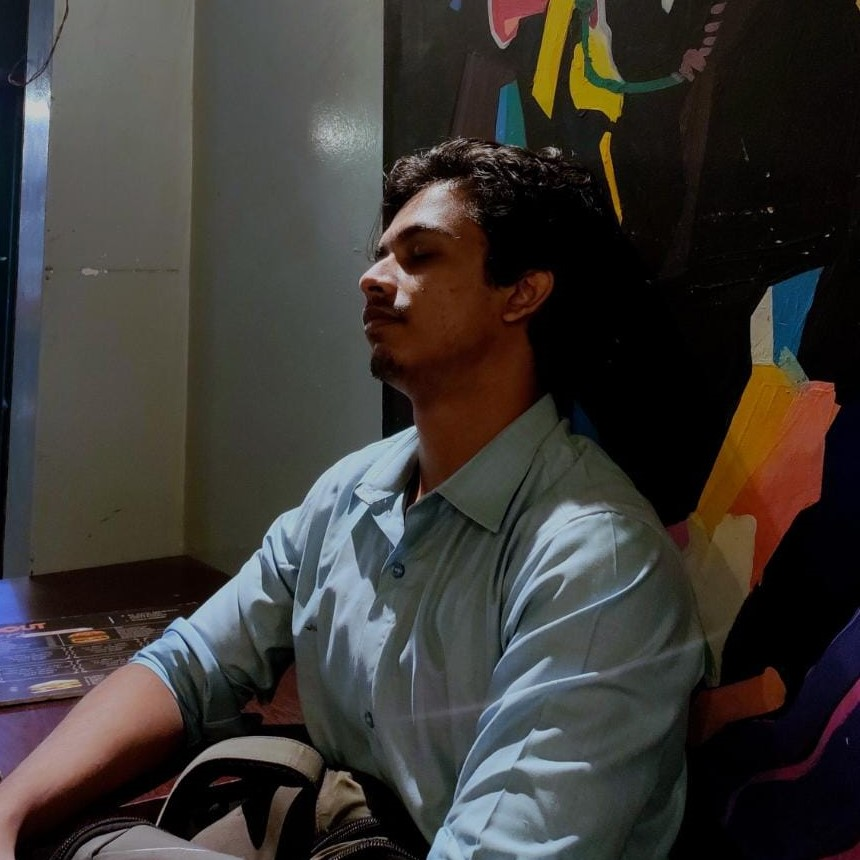

This is Zihad. My life’s weird and chaotic. This is where I log it before I forget 🚀
Why a Blog Site?
I read somewhere:
I think we forget things if we have no one to tell them to.Even more true in my case as I forget easily on top of having no one to share my eventful days with. This is a peek into my everyday experiences, fleeting thoughts, sky photos, and offbeat poetry that doesn’t care to rhyme.
Connect with Me
You can find more of my work and connect with me on GitHub.
